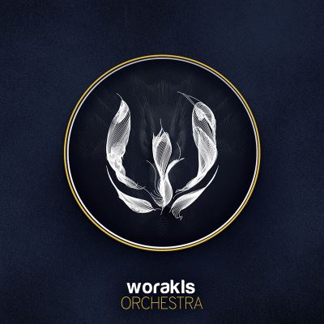
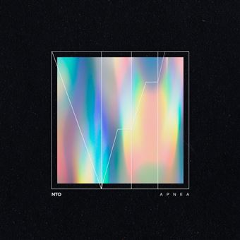
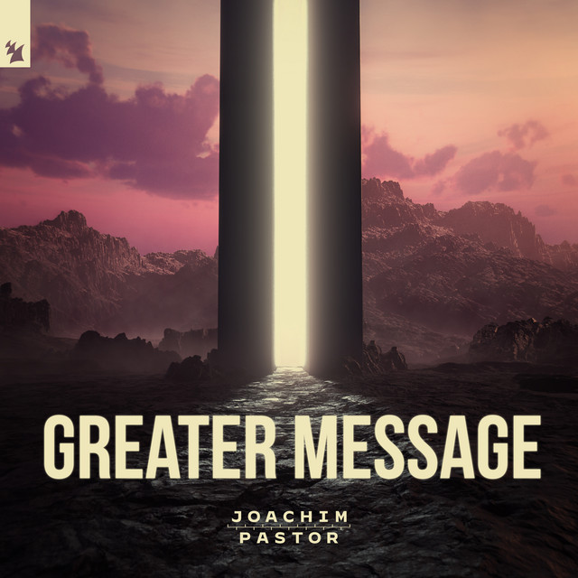

Hungry Music
En septembre 2018, le label fête son cinquième anniversaire pour l'occasion, ses trois fondateurs
adoptent le nom d'Hungry5 afin d'entamer une tournée en France.
De cet anniversaire,
un album
"Best of" sort au mois de novembre constitué de quinze titres de la même année. Bien qu'aucun
des
sons présent sur l'album ne soit une
collaboration des trois, c'est le seul album existant qui réuni les membres du label.
Worakls
Orchestra
Orchestrations puissantes, mélodies vibrantes et sonorités oniriques sont caractéristiques de la musique de Worakls. Sur cet album enregistré avec son propre orchestre, le “Worakls Orchestra”, il sort ce premier album comprenant dix nouveaux titre exclusif.
NTO
Apnea (08/10/21)
Avec “Apnea”, NTO, dévoile une plongée dans les abîmes de sa musique. Depuis près de dix ans, NTO développe une électro minimaliste et poétique. Composé de treize titres, l'album est le fruit d'une rencontre et d'une exploration en profondeur.
J. Pastor
Greater Message
A travers les treize pistes qui le composent, Greater Message nous fait voyager au coeur des multiples inspirations de l’artiste, passant de tracks chill à des morceaux techno mélodiques. Cet album aux multiples inspirations, devient au fil de l’écoute un véritable voyage musical électronique.